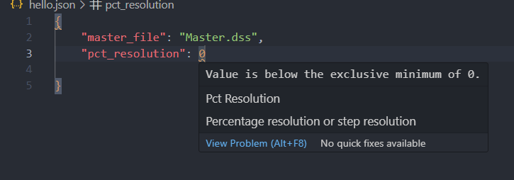

Developing Scenarios
You can develop scenarios in two ways.
Developing Scenario Using Python
Here is an example snippet you can use to develop and write der deployment scenario. EMERGE only supports writing scenarios in OpenDSS file format.
from emerge.scenarios import data_model
from emerge.scenarios.scenario import generate_scenarios
config = data_model.DERScenarioConfigModel(
master_file="Master.dss",
output_folder="der_scenarios",
pct_resolution=20,
num_of_penetration=5,
max_num_of_samples=25,
der_scenario=[
data_model.DERScenarioInputModel(
sizing_strategy=data_model.CapacityStrategyEnum.peak_multiplier,
der_type=data_model.DERType.solar,
der_tag="solar",
file_name="pvsystem.dss",
peakmult_sizing_input={
"0": data_model.SizeWithProbabilityModel(
sizes=0.87, profile="residential_solar", probabilites=1
),
"1": data_model.SizeWithProbabilityModel(
sizes=2.68, profile="commercial_solar", probabilites=1
),
},
selection_strategy=data_model.SelectionStrategyEnum.random_allocation,
other_ders=[
data_model._DERScenarioInput(
sizing_strategy=data_model.CapacityStrategyEnum.peak_multiplier,
der_type=data_model.DERType.load,
der_tag="battery",
peakmult_sizing_input={
"0": data_model.SizeWithProbabilityModel(
sizes=0.356, profile="residential_battery", probabilites=1
),
"1": data_model.SizeWithProbabilityModel(
sizes=0.2625, profile="commercial_battery", probabilites=1
),
},
),
data_model._DERScenarioInput(
sizing_strategy=data_model.CapacityStrategyEnum.fixed_sizing,
der_type=data_model.DERType.load,
der_tag="ev",
fixed_sizing_input={
"0": data_model.SizeWithProbabilityModel(
sizes=[1.2, 7.6],
probabilites=[0.8, 0.2],
profile = ["residential_level1_ev", "residential_level2_ev"],
)
}
)
],
)
],
)
generate_scenarios(config_data=config)
In the above example, we are generating scenarios for 5 penetration levels in the step of 20% (percentage is based on sum of kw from all loads before applying loadshapes.) and each scenario is generated 25 times indicated by max_num_sample. User can configure multiple combination of DERs in der_scenario field. In this case our primary DER is roof top solar but we also want the same customer to have battery and electric vehicle as specified in other_ders field. The solar is sized based using peak multiplier strategy (i.e. size is determined by multiplying user specified multiplier with peak of individual load).
You can pass different multipliers for different groups of loads. In this case we have two groups of load "0" and "1". By default EMEREG reads class attribute for each load in OpenDSS to determine which group they belong to. You can also use yearly attribute to determine class of the load. All roof top solars are selected based on random selection strategy.
Battries are sized using peak multiplier sizing strategy howvever electric vehicles are sized based on fixed sizing strategy. Notice you don't have to specify selection strategy for other ders that is because it is decided using primary der which is solar in this case. For electric vehicles we are only selecting load of type "0" and distributing level 1 charger (1.2 kW) for 20% of customers and level 2 charger (7.6 kW) for 80% of the customer.
Developing scenarios using Command Line Interface
To develop scenarios using command line interface you can use following command.
(cleap) C:\Users\john>emerge generate-scenarios --help
Usage: emerge generate-scenarios [OPTIONS]
Function to create PV deloyment scenarios.
Options:
-c, --config TEXT Path to config file for generating scenarios
--help Show this message and exit.
You will need to create a JSON file and pass it's path to -c flag.
emerge generate-scenarios -c scenario.json
Here is an example JSON.
{
"master_file": "Master_new.dss",
"output_folder": "der_scenarios",
"pct_resolution": 20,
"num_of_penetration": 5,
"max_num_of_samples": 25,
"der_scenario": [
{
"sizing_strategy": "peak_multiplier",
"der_type": "solar",
"der_tag": "solar",
"file_name": "pvsystems.dss",
"peakmult_sizing_input": {
"0": {
"sizes":0.87,
"profile":"residential_solar",
"probabilites":1
},
"1": {
"sizes":2.68,
"profile":"commercial_solar",
"probabilites":1
}
},
"selection_strategy": "random_allocation",
"other_ders": [{
"sizing_strategy": "peak_multiplier",
"der_type": "load",
"peakmult_sizing_input": {
"0": {
"sizes":0.356,
"profile":"residential_battery",
"probabilites":1
},
"1": {
"sizes":0.2625,
"profile":"commerical_battery",
"probabilites":1
}
},
"der_tag": "battery"
},
{
"sizing_strategy": "fixed_sizing",
"der_type": "load",
"fixed_sizing_input": {
"0": {
"sizes":[1.2, 7.6],
"profile": ["residential_level1_ev", "residential_level2_ev"],
"probabilites":[0.8,0.2]
}
},
"der_tag": "EV"
}]
}
]
}
Adding Scenario JSON Schema to VSCode.
You can add JSON Schema to your code editor of choice to get auto completion and validation as you type out your JSON file. Use the command below to generate schema and add to VScode.
emerge create-schemas --vscode "true"
emerge_scenario_schema.json file within .vscode directory. If the directory is not present then it will
create one for you and dump the file. It will also update json.schemas`` field insettings.json` file.
